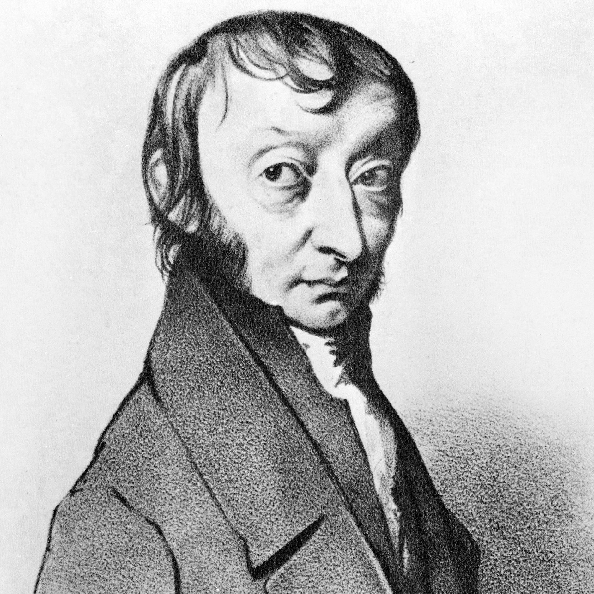
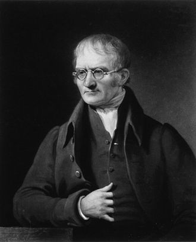
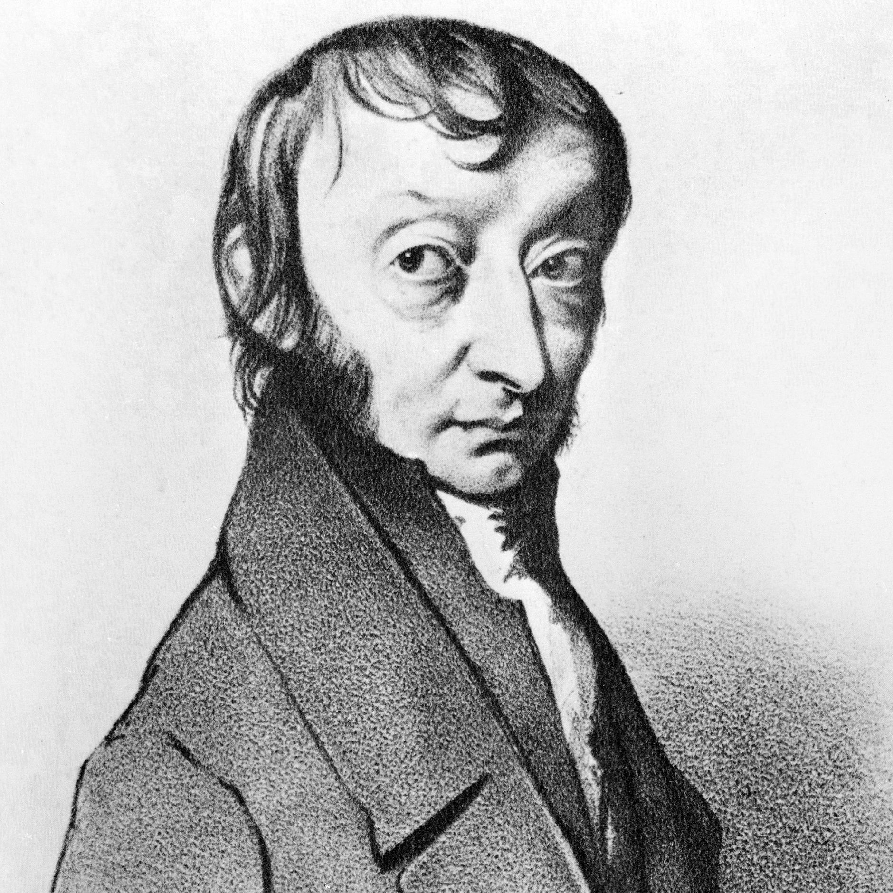
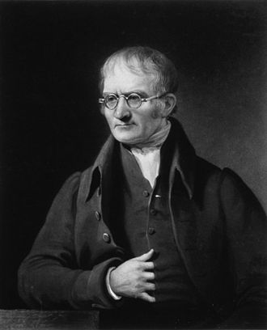
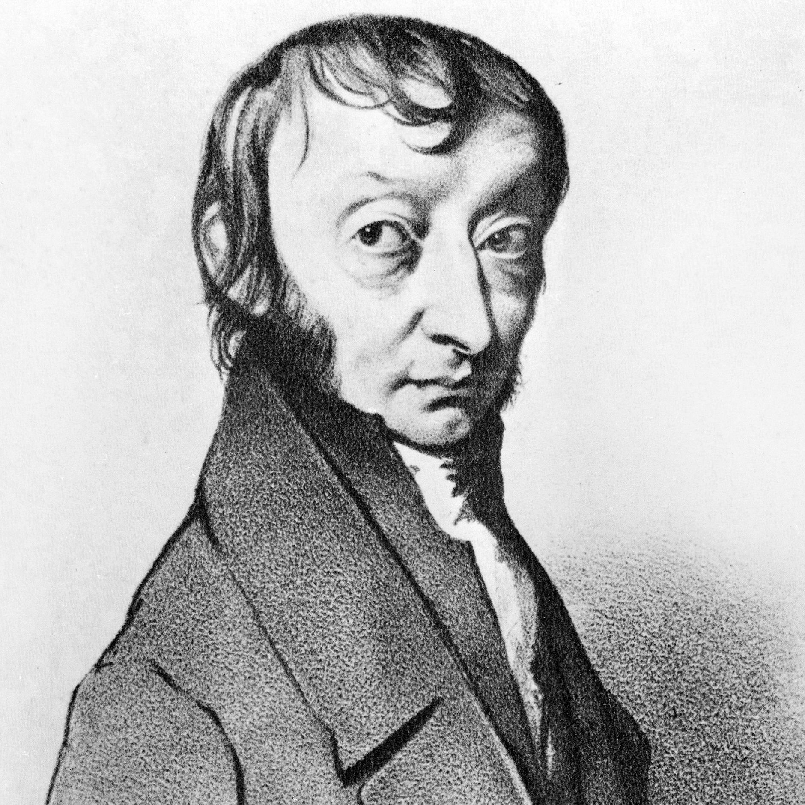
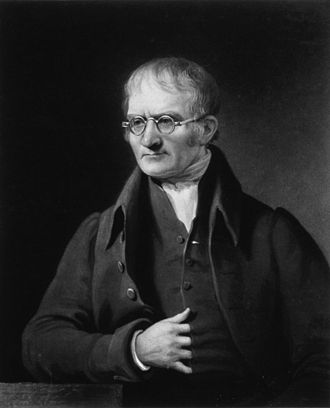
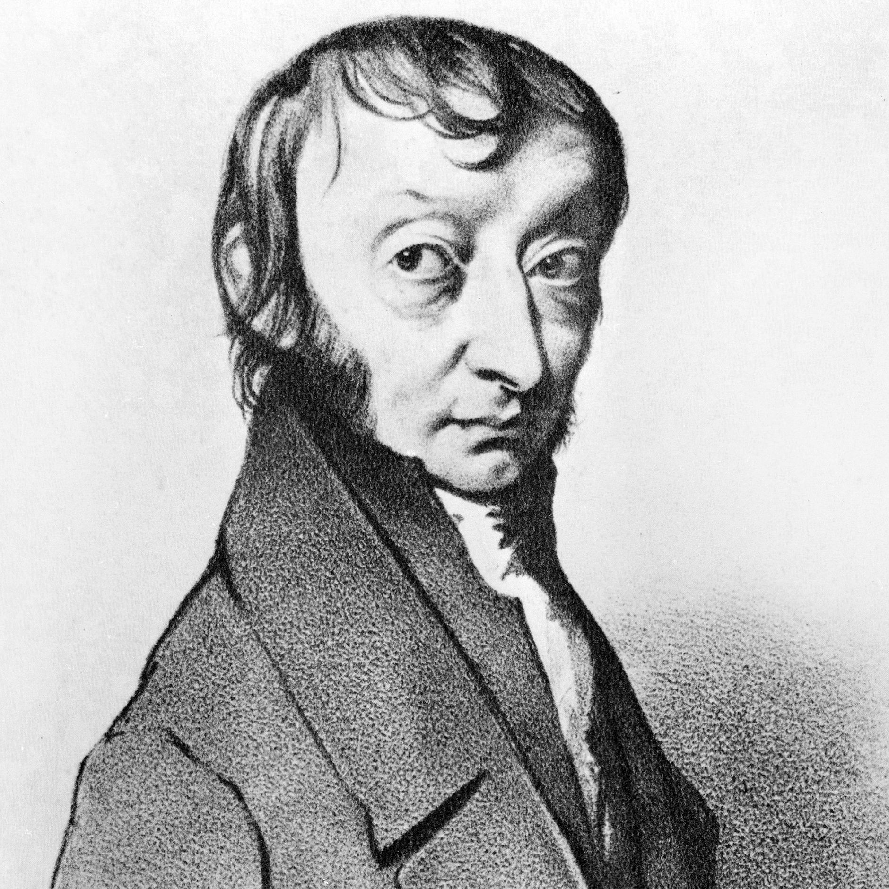
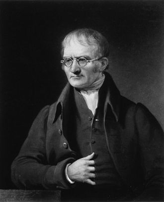

any system of knowledge that is concerned with the physical world and its phenomena and that entails unbiased observations and systematic experimentation. In general, a science involves a pursuit of knowledge covering general truths or the operations of fundamental laws.
Science can be divided into different branches based on the subject of study.
The physical sciences study the inorganic world and comprise the fields of astronomy,
physics, chemistry, and the Earth sciences.
The biological sciences such as biology and medicine study the organic world
of life and its processes.
Social sciences like anthropology and economics study the social and cultural aspects of human behaviour.
is a systematic enterprise that builds and organizes knowledge in the form of testable
explanations and predictions about the universe and the world.
The earliest roots of science can be traced to Ancient Egypt and Mesopotamia in around
3000 to 1200 BCE. Their contributions to mathematics,
astronomy, and medicine entered
and shaped Greek natural philosophy of classical antiquity, whereby formal attempts were
made to provide explanations of events in the physical world based on natural causes.
After the fall of the Western Roman Empire, knowledge of Greek conceptions of the world
deteriorated in Western Europe from the 5th to 10th century during the Middle Ages, but
was preserved in the Muslim world during the Islamic Golden Age.
The recovery and assimilation of Greek works and Islamic inquiries into Western Europe from
the 10th to 13th century revived natural philosophy,
which was later transformed by the
Scientific Revolution that began in the 16th century as new ideas and discoveries departed
from previous Greek conceptions and traditions.
The scientific method soon played a greater
role in knowledge creation and it was not until the 19th century that many of the institutional
and professional features of science began to take shape; along with the changing of
"natural philosophy" to "natural science."
Modern science is typically divided into three major branches that consist of the natural sciences
(e.g., biology, chemistry, and physics),
which study nature in the broadest sense; the social sciences
(e.g., economics, psychology, and sociology), which study individuals and societies; and the formal sciences
(e.g., logic, mathematics, and theoretical computer science),
which deal with symbols governed by rules.
There is disagreement, however, on whether the formal sciences constitute a science as they do not rely
on empirical evidence. Disciplines that use existing scientific knowledge for practical purposes,
such as engineering and medicine, are described as applied sciences.
New knowledge in science is advanced by research from scientists who are motivated by curiosity
about the world and a desire to solve problems. Contemporary scientific research is highly collaborative
and is usually done by teams in academic and research institutions,
government agencies, and companies.
The practical impact of their work has led to the emergence of science policies that seek to influence the
scientific enterprise by prioritizing the development of commercial products, armaments, health care, public
infrastructure, and environmental protection.
any system of knowledge that is concerned with the physical world and its phenomena and that entails unbiased observations and
systematic experimentation. In general, a science involves a pursuit of knowledge covering general truths or the operations of fundamental laws.
Science can be divided into different branches based on the subject of study.
The physical sciences study the inorganic world and comprise the fields of astronomy,
physics, chemistry, and the Earth sciences.
The biological sciences such as biology and medicine study the organic world
of life and its processes.
Social sciences like anthropology and economics study the social and cultural aspects of human behaviour.